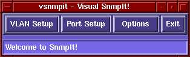
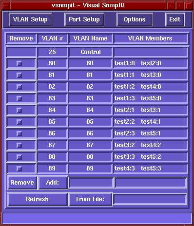
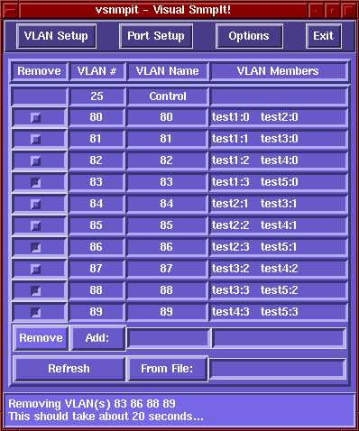
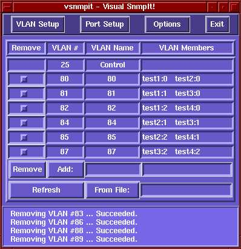
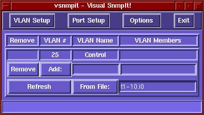
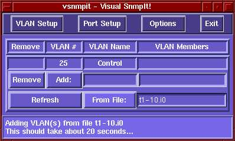
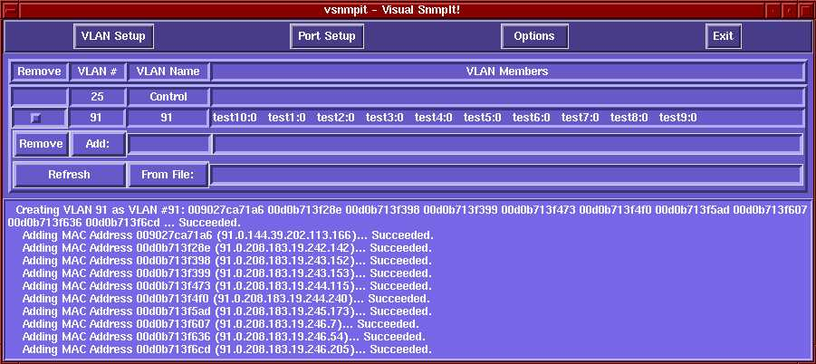
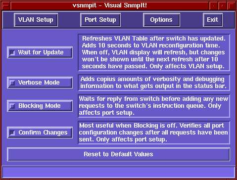

snmpit is a tool that uses SNMP to manage the Intel 510T
switches that are used in the Utah Testbed. Its abilities include VLAN
configuration (create, delete, [list, configure from a file]) and
configuration of port settings (enable/disable, auto-detect
speed/duplex, speed, duplex).
vsnmpit is a graphical interface to
snmpit. It does everything that snmpit does, but in a
prettier and more convenient way.
In the context of the testbed, this allows creating of the virtual "links" in the topology using VLANs, and allows configuration of different types of connections (100Mbps/10Mbps, Full/Half duplex), and forcing a link to go down by disabling it on the switch.
snmpit is currently located in /usr/testbed/bin/ on plastic.
vsnmpit, or Visual SnmpIt!, has no command line options,
and is simply run by typing vsnmpit or vsnmpit
& on the command line. When it starts, you will see this:

The buttons at the top bring up their associated menus. As expected, the Exit button in the top right corner closes vsnmpit. (As you can see, all screen shots show vsnmpit as seen using the fvwm2 window manager, configured with red active borders.)

The process of removing VLANs is quite simple. First, select some VLANs to remove. Like this:
Then press the Remove button, and you'll see this:

When it finishes, you'll get something like this:

The File button is used to add a set of VLANs specified in a setup
file. See here for details on making this file. It
is really quite simple. First, type in the file name. Here we use
t1-10.i0, a file that takes machines tbpc01 through
tbpc10, and adds their first interface, i0, to a VLAN. In this way,
all the machines can talk to each other on thier first interface.

Then it will show you this:

And when it finishes, the switch will be configured like this:

Choose a switch, and it will show you its ports, and the way they are currently configured. Then make any changes you like, and hit the update button.

snmpit - A general purpose SNMP Tool - Version 1.1
Syntax:
snmpit [-h] [-v] -i<ip>
[-u] [-l] [-m<vlan name>] [-vlan<MAC Addr.>]
[-f<filename>] [-r<vlan #> <vlan #> ... ]
[+b|-b] [+c|-c] [-s] [-p<port> <port> <x>..<y> ... ]
[-d|-e] [+a|-a] [-s<speed>] [-dup<duplex>]
General:
-h Display this help message
-v Verbose mode (now off)
-i IP address or switch name
VLAN Control:
-u Wait for Update of VLAN tables (takes ~10 seconds)
-l List all VLANs on switch (ell, not #1)
-m Make a VLAN
-vlan Add MAC Address to VLAN
-f File mode - Automatically set up set of VLANs
-r Remove VLAN(s)
Port Control:
+b/-b Blocking mode (now off)
+c/-c Confirm Changes (now on)
-s Show Port Configurations
-p List of port numbers and ranges
-d Disable port(s)
-e Enable port(s)
+a/-a Enable/Disable Port Auto-Negotiation of speed/duplex
-spd Port Speed (10 or 100 Mbits)
-dup Port Duplex (half or full)
snmpit [-h] [-v] -i<ip>
-h Display this help message
-v Verbose mode (now off)
-i IP address or switch name
Alpha/155.99.214.170 Beta/155.99.214.171 Gamma/155.99.214.172 Delta/155.99.214.173
snmpit [-u] [-l] [-m<vlan name>] [-vlan<MAC Addr.>]
[-f<filename>] [-r<vlan #> <vlan #> ... ]
snmpit also understands machine names and interfaces in
the format <name>:<interface>, such as tbpc01:0 or tbpc03:3, in
place of MAC addresses. Output of known MAC addresses will also be
converted to this format. Therefore, anywhere that a MAC address is
used, you may also supply a name/interface pair.
-u Wait for Update of VLAN tables (takes ~10 seconds)
-l List all VLANs on switch (ell, not #1)
-m Make a VLAN
-vlan Add MAC Address to VLAN
snmpit -i alpha -vlan 1C2B536AF27C 008b1ca721d0This would put the network cards with MAC addresses "1C2B536AF27C" and "008b1ca721d0" in a VLAN together, making a "link" in the topology, as if it were hardwired with a cable. These two MAC addresses can now only communicate with each other, whether by broadcast, unicast, or multicast.
-f File mode - Automatically set up set of VLANs
START vlan link1 1C2B536AF27C 008b1ca721d0 link2 1073c38b28fd 283bc8a82f8c ... <name1> <MAC 1> <MAC 2> <name2> <MAC 3> <MAC 4> ... a_b tbpc01:0 tbpc02:0 a_c tbpc01:1 tbpc03:0 a_d tbpc01:2 tbpc04:0 a_e tbpc01:3 tbpc05:0 b_c tbpc02:1 tbpc03:1 b_d tbpc02:2 tbpc04:1 b_e tbpc02:3 tbpc05:1 c_d tbpc03:2 tbpc04:2 c_e tbpc03:3 tbpc05:2 d_e tbpc04:3 tbpc05:3 END vlanAfter starting the VLAN sectiom of the file each line should contain a VLAN name and a list of MAC addresses to be put in a VLAN together. There should be at least two, but the actual number is unlimited. When finished, the VLAN section is closed. As mentioned above, the syntax "tbpcM:I" can be used where M is the machine number, and I is the interface, from 0 to 3. The demonstration above shows a fully connected graph with 5 nodes.
-r Remove VLAN(s)
snmpit [+b|-b] [+c|-c] [-p<port> <port> <x>..<y> ... ]
[-d[isable]|-e[nable]] [+a|-a] [-s<speed>] [-dup<duplex>]
+b/-b Blocking mode (now off)
+c/-c Confirm Changes (now on)
-p List of port numbers and ranges
-d Disable port(s)
-e Enable port(s)
+a/-a Enable/Disable Port Auto-Negotiation of speed/duplex
-spd Port Speed (10 or 100 Mbits)
-dup Port Duplex (half or full)